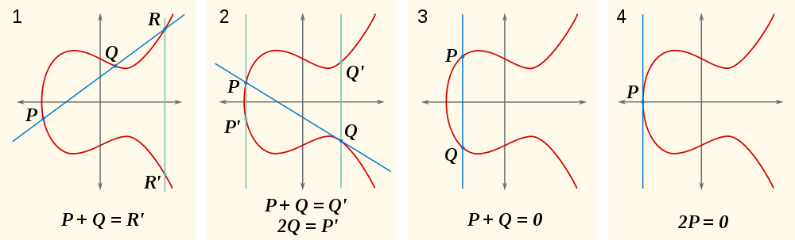

Memet Bulut holds a bachelor’s degree in mathematics and master’s degree in applied mathematics from Texas Tech University. He is currently pursuing his Ed.D. in Math Education and Instructional Technology at Texas Tech University. Memet has seven years of experience in education and began his career as a middle and high school math teacher in 2007 in Lubbock, TX. He also taught several undergraduate math courses as a visiting instructor for two years at Grand Valley State University Michigan and a year at University of Arkansas Fayetteville as a full-time instructor.
His interests include integrating technology into mathematics classrooms as well as issues concerning web 2.0 tools, Geogebra and Desmos software. He enjoys mathematics because he loves to manipulate numbers. In 2016, Memet joined Texas A&M University-San Antonio in the College of Arts and Sciences as a full-time instructor.
Elliptic curve
In mathematics, an elliptic curve is a plane algebraic curve defined by an equation of the formElliptic curves over the real numbers
 Although the formal definition of an elliptic curve is fairly technical and requires some background in algebraic geometry, it is possible to describe some features of elliptic curves over the real numbers using only introductory algebra and geometry. In this context, an elliptic curve is a plane curve defined by an equation of the form
If y2 = P(x), where P is any polynomial of degree three in x with no repeated roots, the solution set is a nonsingular plane curve of genus one, an elliptic curve. If P has degree four and is square-free this equation again describes a plane curve of genus one; however, it has no natural choice of identity element. More generally, any algebraic curve of genus one, for example from the intersection of two quadric surfaces embedded in three-dimensional projective space, is called an elliptic curve, provided that it has at least one rational point to act as the identity.
Using the theory of elliptic functions, it can be shown that elliptic curves defined over the complex numbers correspond to embeddings of the torus into the complex projective plane. The torus is also an abelian group, and in fact this correspondence is also a group isomorphism.